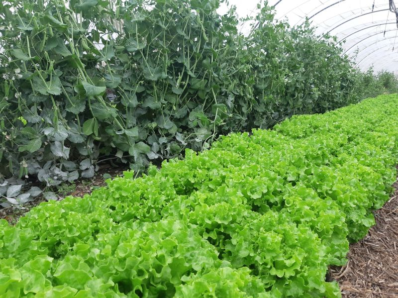
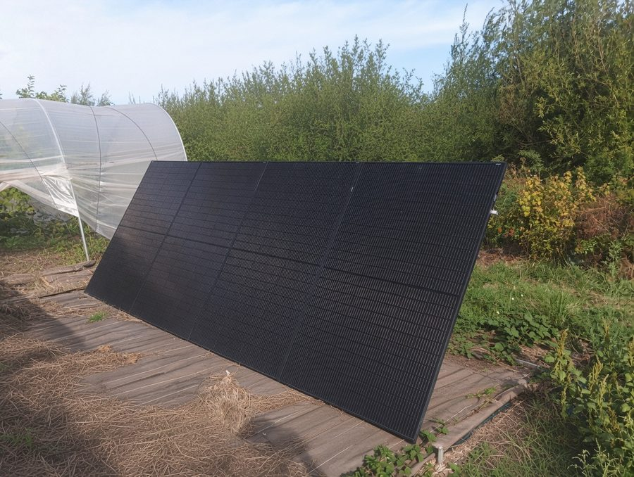
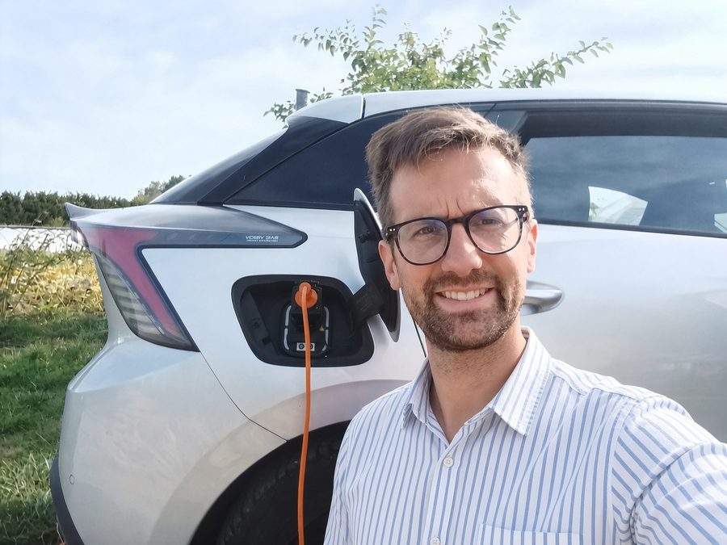
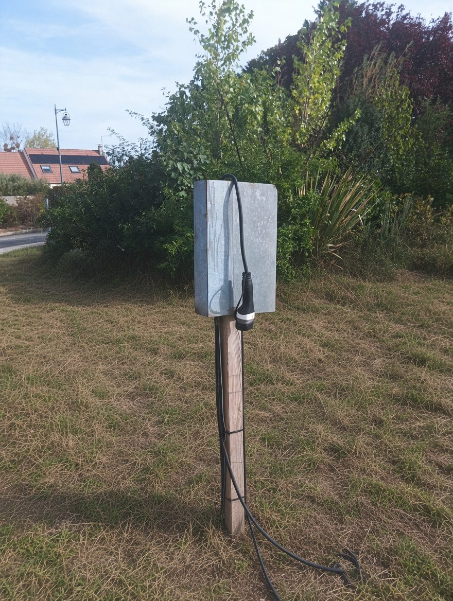
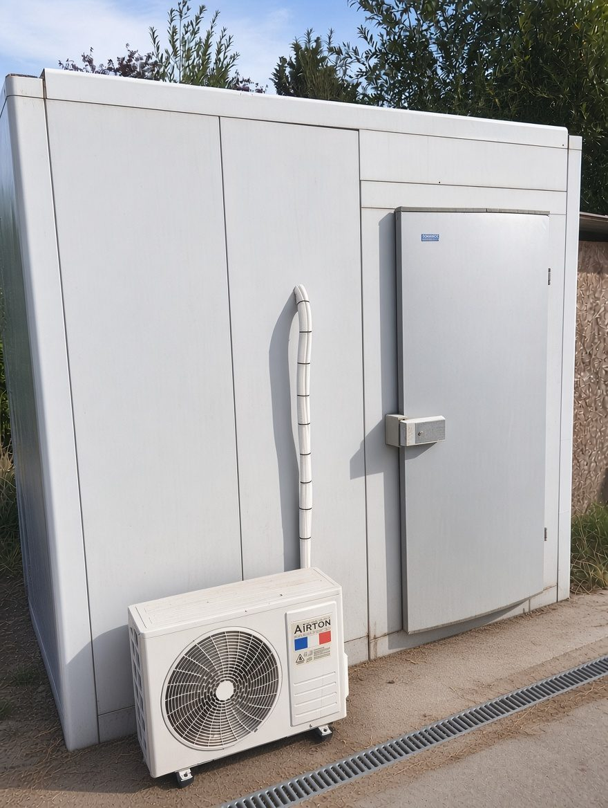
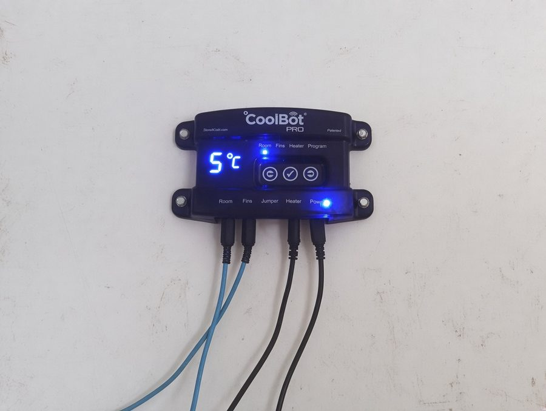

Agriculture biologique certifiée
L’agriculture bio est associée à des baisses d’impacts écologiques et elle est bien identifiée par les consommateurs. C’est notre point de départ.
Maraîchage bio diversifié & poules pondeuses, sur sol vivant, sans une goutte d’énergie fossile.
À la Ferme du Bout des Bois, nous avons choisi de cultiver en respectant quatre principes non négociables.
L’agriculture bio est associée à des baisses d’impacts écologiques et elle est bien identifiée par les consommateurs. C’est notre point de départ.
Il faut pousser le bio plus loin, notamment ne plus travailler le sol (pas de labour, pas de bêche) pour le préserver. Zéro travail du sol depuis 2020, même pas une grelinette. Nous nourrissons le sol avec du compost et la vie souterraine fait le reste.
Pas de tracteur, pas de moteur thermique, pas de fioul. Nos véhicules sont électriques, notre énergie vient du soleil. Nous avons prouvé qu’une ferme peut fonctionner sans une goutte de pétrole.
Climat, biodiversité, cycles de l’eau et de l’azote : nous essayons de produire en restant dans les frontières que la Terre peut supporter. Pas seulement « moins pire », mais compatible avec un monde vivable.
Tomates, concombres, poivrons, aubergines, courgettes, salades, herbes aromatiques… Les serres nous permettent d’allonger les saisons et de protéger les cultures les plus sensibles. C’est ici que la saison commence dès fin février avec les premières plantations.
Nous cultivons seulement des courges et des patates douces en grandes quantités en extérieur
Nos poules ne sont pas une activité annexe : elles font partie du système. Elles valorisent les déchets de culture, après compostage nous pouvons utiliser leurs fientes et elles produisent des œufs. Le cercle est bouclé : ce que la terre donne nourrit les poules, et ce que les poules donnent nourrit la terre.
Récolté le jour même ou la veille. Pas de stock, pas de chambre froide longue durée.
On connaît les prénoms, les enfants de nos clients, les préférences. Des invitations réciproques, des amitiés qui se nouent.
Pas de marge intermédiaire. Un prix qui rémunère le travail et qui reste accessible.
La ferme est un lieu de production, mais aussi un lieu de transmission.
Nous accueillons régulièrement des visiteurs — particuliers, familles, entreprises et associations — pour découvrir concrètement ce qu’est l’agriculture bio sur sol vivant.

Une demi-journée à la ferme pour un collectif qui doit décider. Trois heures, trois temps, aucune salle de réunion.
Ma femme et moi racontons notre parcours, ce que nous avons fait, pourquoi, et ce que cela a changé. Une prise de parole à deux voix, dynamique et engagée.
Serres, plein champ, poulailler, installation solaire hors réseau, chambre froide solaire : nous faisons le tour de la parcelle et des installations.
Nous préparons une activité simple et attrayante : semis, plantation ou récolte en fonction de vos envies et de la saison, afin de rendre la visite plus concrète.
🕐 Demi-journée — 3 heures au total, matin ou après-midi. Format, jauge et tarif sur mesure : parlons-en.
En complément de la demi-journée, j’anime l’un de mes ateliers participatifs :
La ferme fonctionne au soleil. Toute l’énergie nécessaire est produite sur place.
J'ai conçu et installé un système solaire+batterie, hors réseau.
Ils produisent l’électricité de la ferme.
Pour stocker et lisser la production. La ferme tourne aussi quand le soleil se couche, en maintenant les usages critiques.

L’eau d’irrigation vient d’un puits, pompée par l’énergie solaire.
Un puits peu profond qui capte la nappe phréatique locale. La pompe est alimentée directement par les panneaux solaires. Les besoins en eau collent bien avec l'ensoleillement.
Avec la sécheresse sans précédent de 2026, il a fallu allonger les temps d'irrigation. La voiture électrique a alimenté la centrale solaire pour faire tourner la pompe toute la nuit.
Seuls deux usages nécessitent l’eau du réseau, par obligation réglementaire : l’eau de boisson des poules et la dernière eau de lavage des légumes. Tout le reste — irrigation, nettoyage — vient du puits.

Pas une goutte de pétrole, de diesel ou de gaz. Voici comment.
Une voiture électrique et un utilitaire électrique, rechargés par nos panneaux solaires. Les livraisons, les marchés, les trajets du quotidien : tout roule au soleil.
Puisqu’on ne travaille pas le sol, on n’a pas besoin de tracteur. Pas de labour = pas de machine lourde = pas de fioul. Le sol vivant nous libère du diesel.
Pour les petits travaux de surface, on utilise un microculteur qui vient des USA alimenté par une simple visseuse électrique. Léger, silencieux, suffisant.

Conserver les légumes au frais sans investir des milliers d’euros dans du matériel frigorifique industriel : c’est possible.
Comment ça marche Nous utilisons une climatisation classique auto-installée couplée à un boîtier CoolBot.
Ce petit appareil « trompe » la sonde
de la climatisation et lui fait croire qu’il fait plus chaud qu’en réalité. Résultat : la clim descend
la température jusqu’à environ 5 °C, comme une vraie chambre froide.
Coût d’installation réduit Clim Airton auto-installée + CoolBot, une fraction du prix d’une chambre froide professionnelle.
Monitoring de la température Le CoolBot permet de suivre et contrôler la température en continu.
Chambre surisolée Nous avons investi dans une enceinte de type « chambre froide négative » surisolée pour limiter les pertes thermiques et réduire la consommation électrique.

